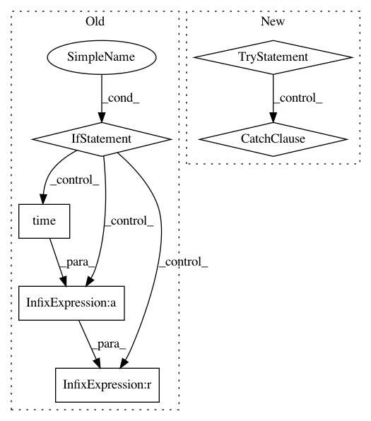

73e25e7454f4d20be3513db3e6357efdc2425638,src/python/pants/pantsd/process_manager.py,ProcessManager,_wait_for_file,#ProcessManager#Any#Any#Any#,151
Before Change
Wait up to timeout seconds for filename to appear with a non-zero size or raise Timeout().
start_time = time.time()
while 1:
if os.path.exists(filename) and (not want_content or os.path.getsize(filename)): return
if time.time() - start_time > timeout:
raise self.Timeout("exceeded timeout of {sec} seconds while waiting for file {filename}"
.format(sec=timeout, filename=filename))
else:
time.sleep(self.WAIT_INTERVAL)
After Change
def file_waiter():
return os.path.exists(filename) and (not want_content or os.path.getsize(filename))
try:
return self._deadline_until(file_waiter, timeout)
except self.Timeout:
// Re-raise with a more helpful exception message.
raise self.Timeout("exceeded timeout of {} seconds while waiting for file {} to appear"
.format(timeout, filename))
def await_pid(self, timeout):
Wait up to a given timeout for a process to launch.
self._wait_for_file(self.get_pid_path(), timeout)
return self._get_pid()
In pattern: SUPERPATTERN
Frequency: 3
Non-data size: 6
Instances
Project Name: pantsbuild/pants
Commit Name: 73e25e7454f4d20be3513db3e6357efdc2425638
Time: 2015-08-31
Author: kwilson@twopensource.com
File Name: src/python/pants/pantsd/process_manager.py
Class Name: ProcessManager
Method Name: _wait_for_file
Project Name: ray-project/ray
Commit Name: de46464aa3595c0fcb622ceaf2248eb9266e46e8
Time: 2020-08-19
Author: architkulkarni@users.noreply.github.com
File Name: python/ray/experimental/queue.py
Class Name: Queue
Method Name: put
Project Name: ray-project/ray
Commit Name: de46464aa3595c0fcb622ceaf2248eb9266e46e8
Time: 2020-08-19
Author: architkulkarni@users.noreply.github.com
File Name: python/ray/experimental/queue.py
Class Name: Queue
Method Name: get